Каталог
Каталог
-

v.1
Результат вашего обучения
-

v.2
Результат вашего обучения
-

v.3
Результат вашего обучения

Максимальная белизна
Для повышения белизны, гладкости и мягкости в состав бумажной массы вводят белые минеральные вещества: мел, тальк, каолин и др. Эта операция называется наполнением. Отлив бумажного листа осуществляют на бумагоделательной машине, важнейшей частью которой является непрерывно движущаяся (как транспортер) металлическая или капроновая сетка.